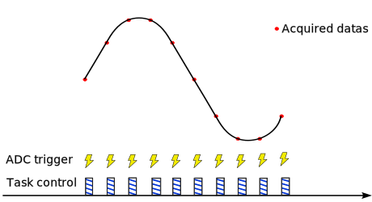

Data acquisition is the process of sampling signals that measure real-world physical conditions and converting the resulting samples into digital numeric values that can be manipulated by a computer.
In the PowerAPI context, the DataAPI helps the user to easily configure the ADC and retrieve the acquired values.
The Data API configures the DMAs to store the ADCs acquisitions for the Spin board, and dispatches them in per-channel buffers that can be read by the user. The module also provides functions to convert the raw values acquired by the sensors into values in the adequate unit.
If using a shield such as Twist, a dedicated interface for sensors configuration is made available by the Shield sensors API.
Quick start with Spin Data API
Note that if you use a shield on the Spin board, you can use the functions provided by the shield API : shield.sensors, which provides the an API similar as this one, but with also more specialized functions that take into consideration shield specificities: sensors accessible by name rather than by using the pin number, initial conversions factors for raw values adapted depending on the sensors, etc.
The Data API is for use only if you do not use a shield, or want to access to a pin that is not connected to a sensor of the shield.
Include
Data API is part of Spin API: it is made available by including the SpinAPI.h header. From there, a spin.data object is available to interact with the API.
Setup phase
To use Data API, the first stage is to indicate on which pin of the Spin board you want to acquire data. Not all pins can be used for that purpose: the pin must be linked to an ADC. Here is the list of pins that provide ADC capabilities:
To indicate that the value of a pin should be acquired, the acquisition must be enabled on this pin in the setup phase. This can be done using the enableAcquisition() function:
Note
// Pins connected to a single ADC:
spin.data.enableAcquisition(35); // Enable acquisition on pin 35 (will use ADC 2)
spin.data.enableAcquisition(12); // Enable acquisition on pin 12 (will use ADC 5)
// Pins connected to multiple ADCs:
spin.data.enableAcquisition(5, ADC_4); // Acquisition on pin 5 using ADC 4
spin.data.enableAcquisition(31); // Acquisition on pin 31 (will use ADC 1 by default)
Note that providing the ADC number is not required. For pins connected to multiples ADC, the ADC with the lowest number will be used if no ADC is specified. Specifying an ADC number that is not available on the pin will result in an error.
By default, the acquisitions are software-triggered, which means that when your program will want to acquire a measure, you'll have to trigger the acquisition. Other means of triggering the measure exists, notably periodic acquisitions, see detailed information. If you need to change the trigger source, this must be done at this point.
At the end of all the hardware configuration (including other modules), the Data API must be started using the start() function. Note that in case you use an uninterruptible task, you do not need to start the Data API manually, this will be done automatically when the uninterruptible task is started.
Obtaining data
After the Data API has been started, it becomes possible to get data obtained from the enabled pins. Depending on the trigger source (see detailed section below), you'll have to trigger the acquisition then read the value, or directly read the value.
If software-trigged is used for an ADC (default configuration), the acquisition must first be triggered, then the value read. If the acquisition is configured to be periodic for ann ADC, directly read the value.
Note
Advanced usage
The above procedure is only for basic usage. Data API has other capabilities that can be configured.
Controlling the conversion
By default, the raw acquired values are provided, except if the board was calibrated.
Raw ADC values
- ADC resolution is 12 bit: the value ranges from 0 to 4096
- Sensing full scale: 0 V to 2.048 V
- The returned value is then linear, from 0 for 0 V to 4096 for 2.048 V
You can edit the conversion factors by calling one of the spin.data.setConversionParameters***() functions.
E.g. setConversionParametersLinear(35, 2, -0.1); will set the conversion parameters for pin 35 to Linear, with a gain of 2 and an offset of -0.1.
Obtaining all the acquired data
When using getLatestValue(), only the latest acquired value for the pin is returned, already converted using conversion parameters set for the pin (if any has been configured).
If you need more precision, you can get all values acquired on a pin since the previous call to a get function.
To do so, use getRawValues(), to obtain all values without any conversion or getValues() to obtain values after conversion.
Warning: using the getValues() function will convert values on-the-fly. This can be long depending on the number of values to be converted and the type of conversion.
These function act similarly, except for the conversion part: they are called with two parameters, the first one is an input parameter indicating which pin you want data from, and the second is an output parameter, a uint32_t whose value will be updated by the function to indicate how many values are available. The function returns an array that has to be stored in a pointer variable.
Note
// Declare a variable for the output parameter:
uint32_t valuesCount;
// Get the values: array of float32_t for converted values
uint16_t* array = spin.data.getRawValues(35, valuesCount);
// Access the values:
for (int i = 0 ; i < valuesCount ; i++)
{
// Do something with array[i]
// E.g. you can use the conversion function
float32_t convertedValue = spin.data.convertValue(35, array[i]);
}
Channel sequence
Each ADC unit can measure multiple analog signal. This works by defining an acquisition sequence.
Tip
By default the aquisition sequence is in continuous mode. It means than one trigger will trigger all the sequence of acquisition. This can be changed using Discontinuous Mode
Example
spin.adc.enableAcquisition(2, ADC_1)
spin.adc.enableAcquisition(3, ADC_1)
spin.adc.enableAcquisition(1, ADC_1)
spin.adc.enableChannel(1, ADC_1)
In this example, for each trigger, the ADC1 will measure channel 1.
Note
The sequence order is given by the order in which the spin.adc.enableChannel() function is called.
E.g., in the above case, the acquisition order would be pin 2, then 3, then 1.
Continuous / Discontinuous sequence
Note
This is relevant if more than one measurement is taken with the same ADC.
 All enabled pins for the ADC are acquired at each trigger
All enabled pins for the ADC are acquired at each trigger Only acquire one pin in the sequence at each trigger. The next trigger will acquire the next pin in the sequence, etc.
Only acquire one pin in the sequence at each trigger. The next trigger will acquire the next pin in the sequence, etc.Triggering the acquisition
The data acquisition can be triggered by two sources:
- software trigger: you will have to explicitely call spin.data.triggerAcquisition() to trigger an acquisition.
- event-based: the trigger is automatically done in sync with the PWM generation.
Software triggered

A software trigger for an ADC is a command or signal generated by the software to start the ADC conversion process. Instead of using a hardware signal or event to initiate the conversion, the ADC is triggered by software instructions, allowing for precise control and synchronization with other software processes or events. For example this trigger command can be generated from a high speed control task.
Synchronous with PWMs
Software triggers is generally speaking not suitable for applications that requires precise timing. Sometimes measurement have to be taken at a specific time, in interaction with the control signal.
Info
This kind of acquisition have a side benefit. It operates in the background and does not interfer with software. It means that periodical sampling will not interrupt code execution.
The trigger is the PWM peripheral, the ADC performs the conversion and place the result in an output buffer, the output buffer is directly placed in memory by a DMA. A rather complex software mechanics execute periodically and serve each measurement in a dedicated memory space. The periodical routine is executed at the beggining of the controlTask.
Info
Synchronous measurement require having a controlTask running.
Tip
This page informs on how to parameters the triggering of the measurement To retrieve measurement values please refer to DataAPI
The section below explain how to synchronize measurements with control signals.
Note
These features are available for ADC1 and ADC2.
Advanced usage of PWM-triggered acquisition
The PWM-triggered acquisition can be further configured.
The different event and trigger of ADC/HRTIM
You might have seen that there are differents variables referencing adc trigger :
There ishrtim_eevx or ADCTRIG_x, let's see the role of each of them.
ADCTRIG_x
In the PWM API, four signals can serve as ADC triggers, initiating ADC conversions: ADC_TRIG1, ADC_TRIG2, ADC_TRIG3, and ADC_TRIG4.
The PWM is produced by a carrier (see here) by using a comparator to compare a specific constant value with the carrier, we can generate an event when enabling a trigger on the PWM. For instance :
We are enabling and linking ADCTRIG_1 to PWMA. That means that when the comparator value and the carrier value of the PWMA we can generate an event from ADCTRIG_1 that can be used to start an ADC conversion :

The comparator value can be adjusted using the function spin.pwm.setAdcTriggerInstant(PWMA, 0.5). For example, setting it to 0.5 means triggering an event halfway through the switching period, initiating an ADC conversion.
hrtim_eevx
An acquisition can be initiated either by software (via a function) or hardware through an external event. Numerous external events exist, but some are specifically related to PWM: hrtim_eev1, hrtim_eev2, hrtim_eev3, and hrtim_eev4.
Each of these external events is associated with events generated by ADCTRIG_x. For instance, hrtim_eev1 is linked to ADCTRIG_1, and so on.
spin.pwm.setAdcTrigger(PWMA, ADCTRIG_1);
spin.pwm.enableAdcTrigger(PWMA);
spin.data.configureTriggerSource(ADC_1, hrtim_eev1);
Source ADC and PWM channel
ADC1 and ADC2 can be associated with PWM channels at will.

Modulation impact
Note
Hardware trigger depends on PWM modulation.

Rising Edge / Falling edge
Note
This only applies to center aligned modulation.

Measurment trigger instant
Trigger timing can be defined or changed dynamically.


Number of PWM period between acquisition
Note
This is relevant if more than one measurement is taken with the same ADC.


Deeper understanding of Data API
Data dispatching
When using the control task (critical task) data are dispatched at the start, which means there are ready to be retrieved by the get***() functions.

Data dispatching is an internal mechanism of Data API, that transfers Data from the internal buffers controlled by the DMA to user-level buffers that can be retreived by the get***() functions. If dispatching is not done, the user will not be able to retrive values, and the get***() functions will return no value.
The dispatch is done automatically and the in most cases, the user does not have to worry about it. However, in some cases, the user may want to know when this is done.
If you use an uninterruptible task to manage the converter on a fast loop, the dispatch is automatically done just before each call of the task.
If you do not have an uninterruptible task however, then the dispatch will be done once all enabled acquisitions for an ADC have been done. This means that if you configure ADC 1 with one acquisition and ADC 3 with two acquisitions, the data for a pin controlled by the ADC 1 will be available at each acquisition, while the data for a pin controlled by the ADC 3 will only be available every time it has acquired two values.
API start
The Data API must be started after all configuration has been carried out. However, in most common cases, this will happen automatically. If you use an uninterruptible task to manage the converter on a fast loop, the Data API is automatically started when the task is started.
The cases where you have to manually start the Data API are the following:
* No uninterruptible task defined in the program,
* An uninterruptible task is defined, but its start function is called with a value false for its parameter.
The second case is only used in advanced scenarios where the user want full control over Data API.
If you use Data API in one of these cases, the Data API must be started using the start() function. This call must only be made at the end of all the hardware configuration (including other modules).
Initialization sequence
If you want specific ADC behavior (trigger sources, discontinuous mode, etc.), you will want to configure set these configurations before starting the API.
After channels have been enabled, the conversion parameters can be set so that raw values can be automatically converted to the relevant unit. This is done using the spin.data.setParameters() function.
After channels have been enabled (and optionnally conversion parameters have been set), there are two ways of starting the API, depending on your use of other OwnTech APIs. If your code uses an uninterruptible task, nothing more is required, the Data API will be started automatically when task is started. However, if you do not have an uninterruptible task in your code, you need to manually start the API by calling spin.data.start().
Note
- Enable acquisition on the pins you want:
spin.data.enableAcquisition() - Define acquisition conversion parameters, e.g. using
spin.data.setConversionParametersLinear() - Start data dispatching
spin.data.start() - Trigger an initial adc conversion
spin.data.triggerAcquisition(ADCx) - Retrieve values :
spin.data.getLatestValue()orspin.data.getRawValues()
- Make sure PWM engine is initialized
- Enable acquisition on the pins you want:
spin.data.enableAcquisition() - Define acquisition conversion parameters, e.g. using
spin.data.setConversionParametersLinear() - Start data dispatching
spin.data.start() - Retrieve values :
spin.data.getLatestValue()orspin.data.getRawValues()
Example
/* PWM unit initialization */
spin.pwm.setModulation(PWMA, UpDwn);
spin.pwm.setAdcEdgeTrigger(PWMA, EdgeTrigger_up);
spin.pwm.setAdcDecimation(PWMA, 1);
spin.pwm.setMode(PWMA, VOLTAGE_MODE);
spin.pwm.initUnit(PWMA);
spin.pwm.setDeadTime(PWMA, 200,200);
spin.pwm.setAdcTrigger(PWMA, ADCTRIG_1);
spin.pwm.enableAdcTrigger(PWMA);
spin.pwm.setDutyCycle(0.5);
spin.pwm.startDualOutput(PWMA);
/* ADC initialization */
spin.data.configureTriggerSource(ADC_1, hrtim_eev1); // ADC 1 ; HRTIM event 1
spin.data.configureDiscontinuousMode(ADC_1, 1); // ADC 1 ; acquire 1 pin at each event
spin.data.enableAcquisition(5, ADC_1); // Pin 5 using ADC 1
spin.data.start();
float32_t adc_value = data.getLatestValue(5); // Pin 5
Retrieving latest value
Getting the latest measured value to feed the control algorithm is super simple.
Getting values with the right unit
DataAPI contains commodity functions to convert the raw binary measurement values in meaningful units.
Get an array of values
DataAPI contains commodity function to retrieve an array of raw values that can be fed to a post processing filter.
Class DataAPI
Public Functions
| Type | Name |
|---|---|
| void | configureDiscontinuousMode (adc_t adc_number, uint32_t dicontinuous_count) Set the discontinuous count for an ADC. By default, ADCs are not in discontinuous mode. |
| void | configureTriggerSource (adc_t adc_number, adc_ev_src_t trigger_source) Change the trigger source of an ADC. By default, triggger source for ADC 1/2 is on HRTIM1, and ADC 3/4 is software-triggered. |
| float32_t | convertValue (uint8_t pin_number, uint16_t raw_value) Use this function to convert values obtained using matching data.getRawValues() function to relevant unit for the data: Volts, Amperes, or Degree Celcius. |
| int8_t | enableAcquisition (uint8_t pin_number, adc_t adc_number=DEFAULT_ADC) This function is used to enable acquisition on a Spin PIN with a given ADC. |
| conversion_type_t | getConversionParameterType (uint8_t pin_number) Use this function to get the current conversion type for the chosen channel. |
| float32_t | getConversionParameterValue (uint8_t pin_number, parameter_t parameter_name) Use this function to get the current conversion parameteres for the chosen channel . |
| float32_t | getLatestValue (uint8_t pin_number, uint8_t * dataValid=nullptr) This function returns the latest acquired measure expressed in the relevant unit for the channel: Volts, Amperes, or Degree Celcius. |
| uint16_t * | getRawValues (uint8_t pin_number, uint32_t & number_of_values_acquired) Function to access the acquired data for specified pin. This function provides a buffer in which all data that have been acquired since last call are stored. The count of these values is returned as an output parameter: the user has to define a variable and pass it as the parameter of the function. The variable will be updated with the number of values that are available in the buffer. |
| float32_t * | getValues (uint8_t pin_number, uint32_t & number_of_values_acquired) Function to access the acquired data for specified pin. This function converts all values that have been acquired since last call are stored and provide an array containing all of them. The count of these values is returned as an output parameter: the user has to define a variable and pass it as the parameter of the function. The variable will be updated with the number of values that are available in the buffer. |
| float32_t | peekLatestValue (uint8_t pin_number) Function to access the latest value available from a pin, expressed in the relevant unit for the data: Volts, Amperes, or Degree Celcius. This function will not touch anything in the buffer, and thus can be called safely at any time after the module has been started. |
| int8_t | retrieveConversionParametersFromMemory (uint8_t pin_number) Retrieved previously configured conversion parameters from persistent memory. |
| void | setConversionParametersLinear (uint8_t pin_number, float32_t gain, float32_t offset) Use this function to tweak the conversion values for the channel if default values are not accurate enough. |
| void | setConversionParametersNtcThermistor (uint8_t pin_num, float32_t r0, float32_t b, float32_t rdiv, float32_t t0) Use this function to set the conversion values for any NTC thermistor sensor if default values are not accurate enough. |
| int8_t | start () This functions manually starts the acquisition chain. |
| bool | started () Checks if the module is already started. |
| int8_t | stop () Stops the module if it is started. |
| int8_t | storeConversionParametersInMemory (uint8_t pin_number) Store the currently configured conversion parameters of a given channel in persistent memory. |
| void | triggerAcquisition (adc_t adc_number) Triggers an acquisition on a given ADC. Each channel configured on this ADC will be acquired one after the other until all configured channels have been acquired. |
Public Functions Documentation
function configureDiscontinuousMode
Set the discontinuous count for an ADC. By default, ADCs are not in discontinuous mode.
Applied configuration will only be set when ADC is started. If ADC is already started, it must be stopped then started again.
Note:
This is an advanced function that requires to understand the way the ADC work. Only for use if you explicitely requires it.
Parameters:
adc_numberNumber of the ADC to configure.discontinuous_countNumber of channels to acquire on each trigger event. 0 to disable discontinuous mode (default).
function configureTriggerSource
Change the trigger source of an ADC. By default, triggger source for ADC 1/2 is on HRTIM1, and ADC 3/4 is software-triggered.
Applied configuration will only be set when ADC is started. If ADC is already started, it must be stopped then started again.
Parameters:
adc_numberNumber of the ADC to configuretrigger_sourceSource of the trigger
function convertValue
Use this function to convert values obtained using matching data.getRawValues() function to relevant unit for the data: Volts, Amperes, or Degree Celcius.
Note:
This function can't be called before the pin is enabled.
Parameters:
pin_numberNumber of the pin from which to obtain values.raw_valueRaw value obtained from the channel buffer.
Returns:
Converted value in the relevant unit. If there is an error, returns -5000.
function enableAcquisition
This function is used to enable acquisition on a Spin PIN with a given ADC.
Note:
Not any pin can be used for acquisiton: the pin must be linked to a channel of the given ADC. Refer to Spin pinout image for PIN/ADC relations.
Note:
This function must be called before Data API is started.
Parameters:
pin_numberNumber of the Spin pin on which to enable acquisition.adc_numberNumber of the ADC on which acquisition is to be done. This parameter can be omitted, in which case:- If only one ADC is linked to the given pin, it will be selected.
- If two ADCs are available for acquisition on the given pin, the ADC with the lowest number will be selected.
Returns:
0 if acquisition was correctly enabled, -1 if there was an error. Errors generally indicate that the given pin is not linked to and ADC, and thus can not be used for acquisition. If the adc_number parameter was explicitely provided, it can also indicate that the given ADC is not available for acquisition on the provided pin.
function getConversionParameterType
Use this function to get the current conversion type for the chosen channel.
Note:
This function can't be called before the channel is enabled.
Parameters:
pin_numberNumber of the pin from which to obtain values.
Returns:
Returns the type of convertion of the given pin. Returns -5 if the channel is not active.
function getConversionParameterValue
Use this function to get the current conversion parameteres for the chosen channel .
Note:
This function can't be called before the channel is enabled.
Parameters:
pin_numberNumber of the pin from which to obtain values.parameter_nameParamater to be retreived:gainoroffset.
Returns:
Returns the value of the parameter. Returns -5000 if the channel is not active.
function getLatestValue
This function returns the latest acquired measure expressed in the relevant unit for the channel: Volts, Amperes, or Degree Celcius.
Note:
This function can't be called before the pin is enabled. The DataAPI module must have been started, either explicitly or by starting the Uninterruptible task.
Note:
When using this functions, you loose the ability to access raw values using data.getRawValues() function for the matching channel, as data.getLatestValue() function clears the buffer on each call.
Parameters:
pin_numberNumber of the pin from which to obtain values.dataValidPointer to an uint8_t variable. This parameter is facultative. If this parameter is provided, it will be updated to indicate information about data. Possible values for this parameter will be:- DATA_IS_OK if returned data is a newly acquired data,
- DATA_IS_OLD if returned data has already been provided before (no new data available since latest time this function was called),
- DATA_IS_MISSING if returned data is NO_VALUE.
Returns:
Latest acquired measure for the channel. If no value was acquired in this channel yet, return value is NO_VALUE.
function getRawValues
Function to access the acquired data for specified pin. This function provides a buffer in which all data that have been acquired since last call are stored. The count of these values is returned as an output parameter: the user has to define a variable and pass it as the parameter of the function. The variable will be updated with the number of values that are available in the buffer.
Note:
This function can't be called before the pin is enabled. The DataAPI module must have been started, either explicitly or by starting the Uninterruptible task.
Note:
When calling this function, it invalidates the buffer returned by a previous call to the same function. However, different channels buffers are independent from each other.
Note:
When using this functions, the user is responsible for data conversion. Use data.convertValue() function for this purpose.
Note:
When using this function, DO NOT use the function to get the latest converted value for the same channel as this function will clear the buffer and disregard all values but the latest.
Parameters:
pin_numberNumber of the pin from which to obtain values.number_of_values_acquiredPass an uint32_t variable. This variable will be updated with the number of values that are present in the returned buffer.
Returns:
Pointer to a buffer in which the acquired values are stored. If number_of_values_acquired is 0, do not try to access the buffer as it may be nullptr.
function getValues
Function to access the acquired data for specified pin. This function converts all values that have been acquired since last call are stored and provide an array containing all of them. The count of these values is returned as an output parameter: the user has to define a variable and pass it as the parameter of the function. The variable will be updated with the number of values that are available in the buffer.
Warning:
This is an expensive function. Calling this function trigger the conversion of all values acquired since the last call. If only the lastet value is required, it is advised to call getLatestValue() instead. If multiple values are required, but not all, it is advised to call getRawValues() instead, then explicitely convert required values using convertValue().
Note:
This function can't be called before the pin is enabled. The DataAPI module must have been started, either explicitly or by starting the Uninterruptible task.
Note:
When calling this function, it invalidates the array returned by a previous call to the same function. However, different channels buffers are independent from each other.
Parameters:
pin_numberNumber of the pin from which to obtain values.number_of_values_acquiredPass an uint32_t variable. This variable will be updated with the number of values that are present in the returned buffer.
Returns:
Pointer to an array in which the acquired values are stored. If number_of_values_acquired is 0, do not try to access the buffer as it may be nullptr.
function peekLatestValue
Function to access the latest value available from a pin, expressed in the relevant unit for the data: Volts, Amperes, or Degree Celcius. This function will not touch anything in the buffer, and thus can be called safely at any time after the module has been started.
Note:
This function can't be called before the pin is enabled. The DataAPI module must have been started, either explicitly or by starting the Uninterruptible task.
Parameters:
pin_numberNumber of the pin from which to obtain values.
Returns:
Latest available value available from the given channel. If there was no value acquired in this channel yet, return value is NO_VALUE.
function retrieveConversionParametersFromMemory
Retrieved previously configured conversion parameters from persistent memory.
Parameters:
pin_numberSPIN pin number
Returns:
0 if parameters were correcly retrieved, negative value if there was an error: -1: persistent memory is empty -2: persistent memory contains data, but its version doesn't match current version -3: data in persistent memory is corrupted -4: persistent memory contains data, but not for the requested pin -5000: pin not found.
function setConversionParametersLinear
Use this function to tweak the conversion values for the channel if default values are not accurate enough.
void DataAPI::setConversionParametersLinear (
uint8_t pin_number,
float32_t gain,
float32_t offset
)
Note:
This function can't be called before the pin is enabled. The DataAPI module must not have been started, neither explicitly nor by starting the Uninterruptible task.
Parameters:
pin_numberNumber of the pin from which to obtain values.gainGain to be applied (multiplied) to the channel raw value.offsetOffset to be applied (added) to the channel value after gain has been applied.
function setConversionParametersNtcThermistor
Use this function to set the conversion values for any NTC thermistor sensor if default values are not accurate enough.
void DataAPI::setConversionParametersNtcThermistor (
uint8_t pin_num,
float32_t r0,
float32_t b,
float32_t rdiv,
float32_t t0
)
Note:
This function can't be called before the sensor is enabled. The DataAPI must not have been started, neither explicitly nor by starting the Uninterruptible task.
Parameters:
pin_numberNumber of the pin from which to obtain values.r0The NTC resistance at a reference temperature.bThe sensibility coefficient of the resistance to temperature.rdivThe bridge dividor resistance used to condition the NTC.t0The reference temperature of the thermistor.
function start
This functions manually starts the acquisition chain.
Note:
If your code uses an uninterruptible task, you do not need to start Data Acquisition manually, it will automatically be started at the same time as the task as their internal behavior are intrinsically linked. If for some reason you have an uninterruptible task in your code, but do not want the Scheduling module to be in charge of Data Acquisition, you need to indicate it when starting the uninterruptible task. In that case, Data Acquisition must be manually started using this function. Note that in taht case, dispatch will use DMA interrupts which consumes a non-negligible amount of processor time and it is not advised.
Note:
Data Acquisition must be started only after ADC module configuration has been fully carried out. No ADC configuration change is allowed after module has been started. If you're using a power shield and are not sure how to initialize ADCs, you can use data.enableShieldDefaultChannels() for that purpose.
Note:
Data Acquisition must be started before accessing any data.get*() or data.peek*() function. Other Data Acquisition functions are safe to use before starting the module.
Returns:
0 if everything went well, -1 if there was an error. Error is triggered when dispatch method is set to be external, but the repetition value has not provided. Another source of error is trying to start Data Acquisition after it has already been started.
function started
Checks if the module is already started.
Returns:
true is the module has been started, false otherwise.
function stop
Stops the module if it is started.
Returns:
0 if everything went well, -1 if there was an error. Error is triggered when trying to stop Data API while it was not started.
function storeConversionParametersInMemory
Store the currently configured conversion parameters of a given channel in persistent memory.
Parameters:
pin_numberSPIN pin number
Returns:
0 if parameters were correctly stored, negative value if there was an error: -1: There was an error, -5000: pin not found.
function triggerAcquisition
Triggers an acquisition on a given ADC. Each channel configured on this ADC will be acquired one after the other until all configured channels have been acquired.
Note:
This function can't be called before the at least one channel is enabled on the ADC and the DataAPI module is started, either explicitly or by starting the Uninterruptible task.
Parameters:
adc_numberNumber of the ADC on which to acquire channels.
The documentation for this class was generated from the following file docs/core/zephyr/modules/owntech_spin_api/zephyr/src/DataAPI.h